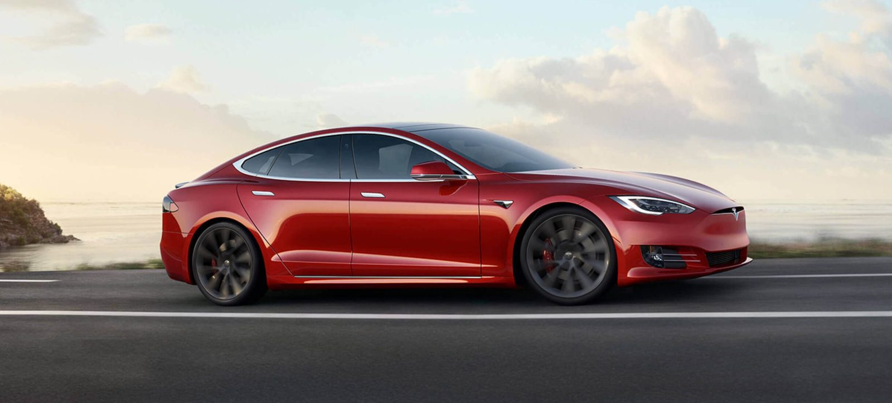

How Electric car are helping the environment

Electric cars are ever more appealing in a world where reducing carbon emissions and pollution is a growing concern for many people. Research has shown that electric cars are better for the environment. They emit less greenhouse gases and air pollutants over their life than a petrol or diesel car. This is even after the production of the vehicle and the generation of the electricity required to fuel them is considered.
Since interest in electric cars is growing all the time, there are many questions about how green and clean they really are. From manufacturing concerns to the way in which electricity is generated, we look at some of the facts surrounding electric cars and their environmental impact.
1. How much good are they really for the environment
The major benefit of electric cars is the contribution that they can make towards improving air quality in towns and cities. With no tailpipe, pure electric cars produce no carbon dioxide emissions when driving. This reduces air pollution considerably. Put simply, electric cars give us cleaner streets making our towns and cities a better place to be for pedestrians and cyclists. Over a year, just one electric car on the roads can save an average 1.5 million grams of CO2. That’s the equivalent of four return flights from London to Barcelona.
Electric cars can also help with noise pollution, especially in cities where speeds are generally low. As the cars are far quieter than conventional vehicles, driving electric creates a more peaceful environment for us all.
2. How does electric car production affect the environment ?
Making electric cars does use a lot of energy. The emissions created during the production of an electric car tend to be higher than a conventional car. This is due to the manufacture of lithium ion batteries which are an essential part of an electric car. More than a third of the lifetime CO2 emissions from an electric car come from the energy used to make the car itself. As technology advances, this is changing for the better. With more efficient manufacturing techniques, the amount of emissions created during the production of batteries will improve.
One Great Example of this is Tesla Motors which are using Renewable energy that is Solar Energy from their own Technology and are using much of the energy from solar that is required to create cars
3. What about the energy required to fuel an electric car
Many people question how green electricity production required to power an electric car really is.
Research by the European Energy Agency found that, even with electricity generation, the carbon emissions of an electric car are around 17 – 30% lower than driving a petrol or diesel car. The emissions from electricity generation are also dramatically improved when low carbon electricity is used. This is how electric cars are helping environment